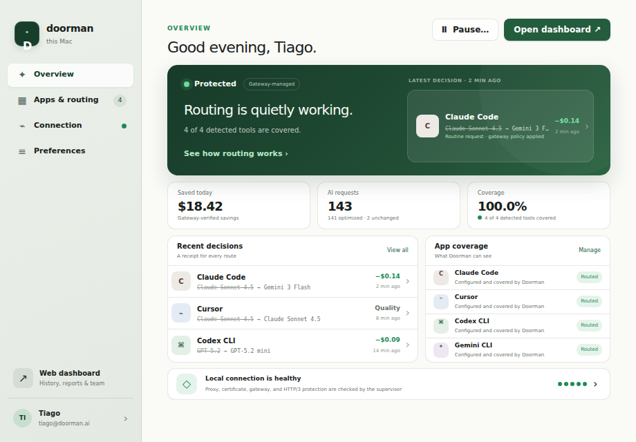
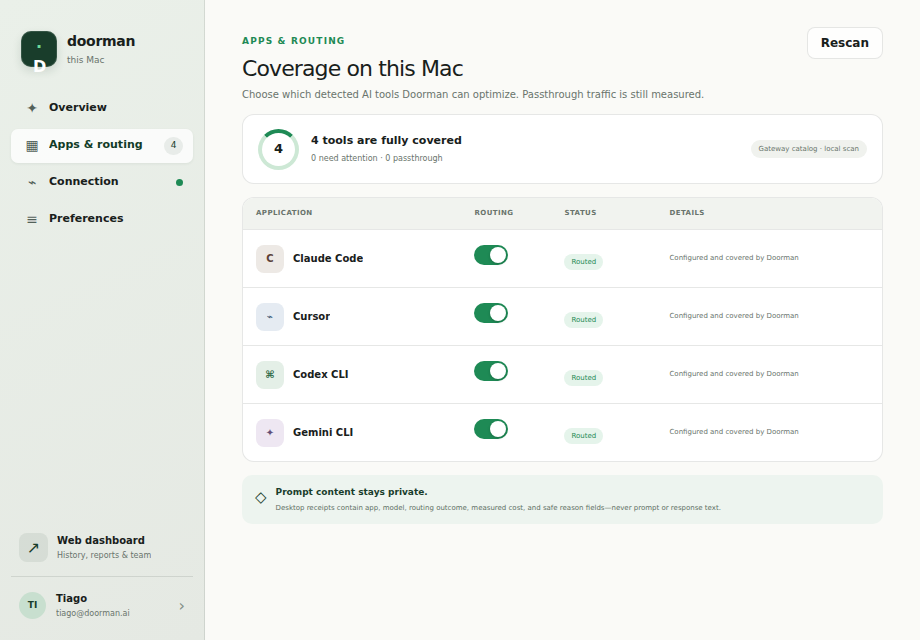
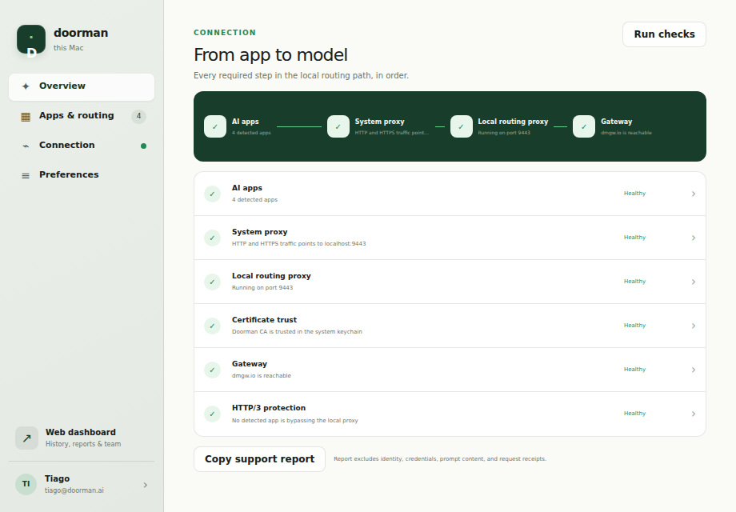
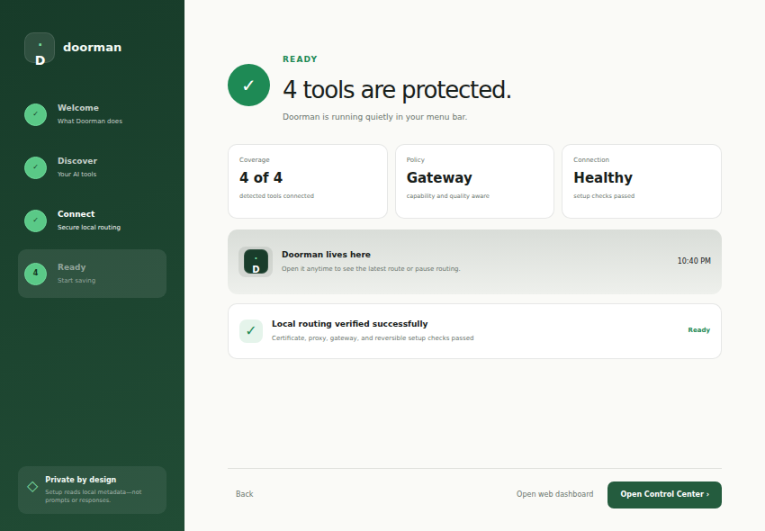

Doorman lives in your menu bar. It detects every AI tool on this Mac — Claude Code, Cursor, Codex, Gemini — and routes each request to the cheapest capable model, with a receipt for every route.

No SDKs and no config edits — Doorman discovers the AI tools on this Mac and covers them at the system level. Each routed request produces a receipt: what asked, where it ran, what it saved.
Strikethrough honesty: the model your tool asked for, the model that did the job, and the difference in dollars. Quality-protected requests say so instead of pretending.

Proxy, certificate, gateway, and HTTP/3 protection are checked continuously. When something needs repair, Doorman asks properly — the native macOS administrator dialog, verified results, and actionable failures. Never silent changes.

Privacy first, then discovery, then explicit consent for each step — with streamed progress, failure rollback, and a ready-proof at the end. Uninstall is reversible and complete.

The gateway owns models, policy, routing decisions, and measured outcomes. The desktop app presents one sanitized state and asks before it acts — it never holds session tokens in the UI, never infers health, never invents numbers.
Download the preview, drag it to Applications, and watch the first receipt land.